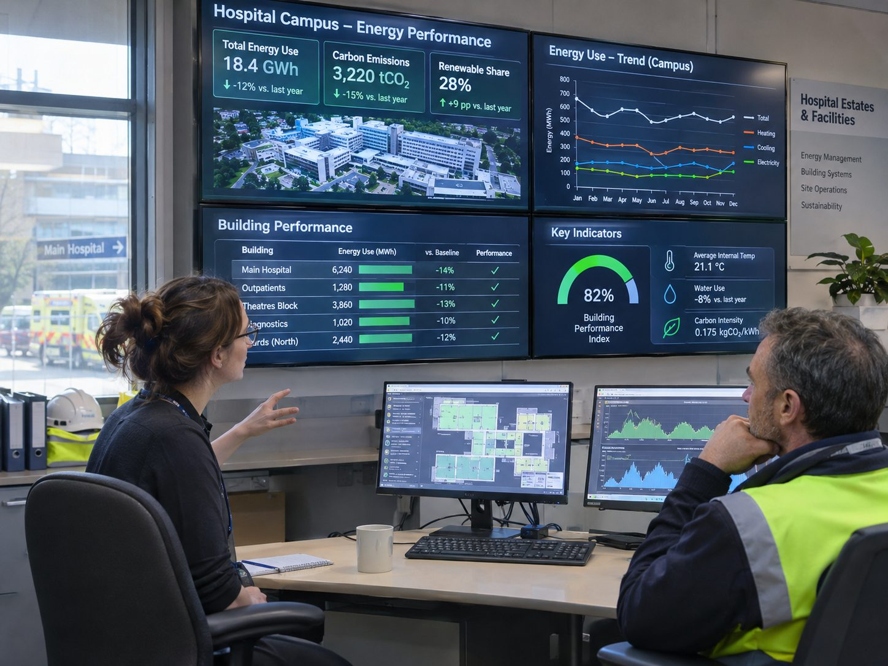

In England, NHS trusts report estates costs and energy use each year through the Estates Returns Information Collection (ERIC). In Wales, health boards and trusts report through the Estates and Facilities Performance Management System (EFPMS). Scottish boards publish annual climate emergency and sustainability reports. These returns give annual totals. Half-hourly data shows when the energy was used, which is what you need to reduce it.
ERIC in England
ERIC is a mandatory collection of estates and facilities data from NHS organisations providing NHS-funded secondary care.1 The 2025/26 collection reported a total cost of running the NHS estate of £14.4 billion, and a Director of Estates must sign off each trust's return.2 The site-level data is public, so you can compare your sites with similar ones elsewhere. Researchers using ERIC data found average energy use intensity in acute hospital sites of about 211 kWh per square metre in 2024/25, with gas around three quarters of the total.3
EFPMS in Wales
EFPMS is the comprehensive collection of estates and facilities data set up by the Welsh Government to improve the management of the NHS estate in Wales, run by NHS Wales Shared Services Partnership's Specialist Estates Services.4 The return includes energy from utilities and local generation, renewable energy, and a section on CHP units.5
Scotland
Scottish health boards publish annual climate emergency and sustainability reports, and the Scottish Government publishes a national report, which shows building energy for heat and power as the largest source of emissions in NHS Scotland's net zero target.6
Comparing your sites fairly
- Compare like with like. An acute hospital with theatres and imaging uses far more per square metre than a community hospital or a health centre.
- Use the same floor area basis as the return, and the same period.
- Separate electricity and heat. A site with CHP buys less electricity and more gas, which moves both figures.
Enter each site's floor area in the analyser to see electricity per square metre alongside the half-hourly detail.
What half-hourly data adds

An annual return tells you a site used, say, 6 GWh of electricity. Half-hourly data shows that 2 GWh of it was base load, that the peak is creeping towards the supply limit, that a ward block's ventilation stopped turning down at night after a refurbishment, and how much of a solar system's output the site would use. That is the evidence that turns a benchmark into a project.
Sources
Checked 18 November 2026.
- NHS standards directory: Estates Return Information Collection
- NHS England Digital: Estates Returns Information Collection, summary page and dataset for ERIC 2025/26
- Buildings (MDPI): Energy use intensity in England's NHS acute hospitals, 2018 to 2025
- NHS Wales Shared Services Partnership, Specialist Estates Services: Estates and Facilities Performance Management System (EFPMS)
- NWSSP Specialist Estates Services: EFPMS data definitions and completion notes 2025/26
- Scottish Government: NHS Scotland climate emergency and sustainability annual report 2025
Questions people ask
What is ERIC?
The Estates Returns Information Collection: a mandatory annual return of estates and facilities data, including energy, from NHS trusts in England. The data is published.
What is EFPMS?
The Estates and Facilities Performance Management System, the mandatory estates and facilities return for NHS Wales, which includes energy, renewables and CHP.
Can I benchmark against other hospitals?
Yes. ERIC site data is public. Compare sites of the same type, on the same floor area basis, and separate electricity from gas.